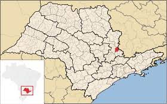

Freguesia criada com a denominação de Nossa Senhora da Penha, por Lei Provincial no 01, 08 de fevereiro de 1847, no Município de Mogi-Mirim.
Elevado a categoria de vila com a denominação provincial de Nossa Senhora da Penha por Lei no 4, de 2 de março de 1858, desmembrado de Mogi-Mirim, constituído do Distrito Sede. Sua instalação verificou-se no dia 20 de setembro de 1858.
Tomou a denominação de Penha do Rio do Peixe, pela Resolução Provincial nº 41, de 20 de abril de 1875. Passou a denomjinar-se Itapira, por Decreto Estadual nº 40, de 1 de abril de 1890. Cidade por Lei Provincial nº 89,de 27 de junho de 1881. Em divisão administrativa referente ao ano de 1911, o Município de Itapira se compõe do Distrito Sede. Assim permanecendo em divisão administrativa referente ao ano de 1933.

Localização Geografica
Em divisões territoriais datadas de 31-XII-1936 e 31-XII-1937, bem como no quadro anexo ao Decretolei Estadual nº 9073, de 31 de março de 1938, o Município de Itapira compreende o único termo judiciário da comarca de Itapira e figura com o Distrito Sede.
No quadro fixado pelo Decreto Estadual nº 9775, de 30 de novembro de 1938, para 1939-1943, o Município de Itapira é composto de 1 único Distrito, Itapira e é termo da comarca de Itapira, formada de 1 único termo, Itapira.
Em virtude do Decreto-lei Estadual nº 14334, de 30 de novembro de 1944, que fixou o quadro territorial para vigorar em 1945-1948, o Município de Itapira ficou composto igualmente de 1 Distrito, Itapira e constitui o único Município e o único termo judiciário da comarca de Itapira. Lei Estadual no 233, de 24 de dezembro de 1948, cria os Distritos de Barão Ataliba Nogueira é Eleutério.
No quadro fixado pela Lei nº 233, de 24-XII-1948, para vigorar em 1949-1953, figura composto dos Distritos de Itapira, Barão Ataliba Nogueira e Eleutério, comarca de Itapira, assim como no fixado pela Lei nº 2456, de 30-XII-1953 para vigorar em 1954-1958.
Em divisão territorial datada de 01-VII-1960, o município é constituído de 3 Distritos: Itapira, Barão Ataliba Nogueira e Eleutério. Assim permanecendo em divisão territorial datada de 15-VII-1999